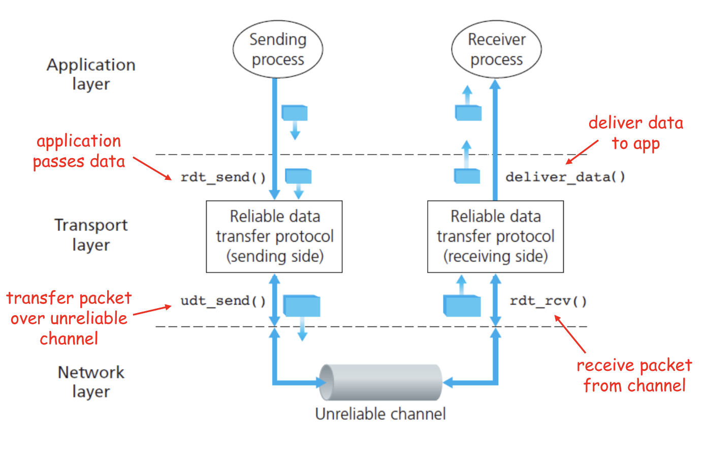
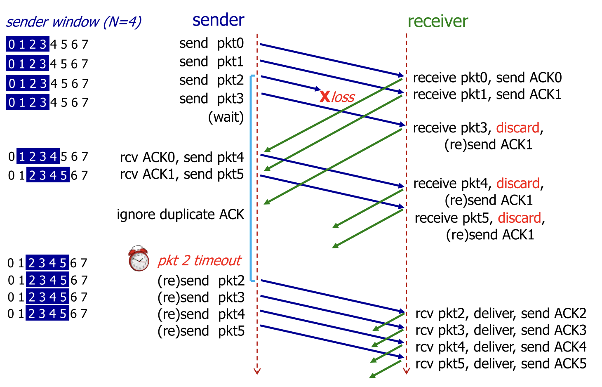

:ID: D1F12114-39AC-40DC-98D0-7B6F67DEC041
links :: CS2105
Internet
Internet is made up of routers
Data packets are sent through the network from source to destination
Data Transmission
Packet switching
Users under the same router share its resources
Resources are not reserved, used on demand
A result of this is that packets may take different paths
Congestion is possible
Bits sent over a link which represent packets
Timing is a product of maximum bandwidth and propagation delay
Routers implement store and forward
Entire packet must reach the router before it will forward to the next stop in the network
This adds additional delay to the transmission
This is for the purpose for:
Integrity Checks
Network Conditions
links :: CS2105 Exams
Packet Loss
Packet loss may occur when the router's buffer is full
Connectivity issues may occur (both wired and wireless)
Signal noise may result in corrupted packets
Packet Delay
Processing Delay
Generally ignored
How long it takes to process the packet (check for integrity, determine what to do with the packet)
Queueing Delay
Generally ignored
Time taken waiting for the router to finish processing packets that arrived before
Transmission Delay
Limited by bandwidth of the connection
"How long do I have to wait before can I send the next bit?"
\(\frac{\text{bits per time}}{\text{number of bits}}\)
Propagation Delay
Limited by the speed of the signal along the connection.
"How long does it take for the data to go from point A to point B"?
\(\frac{\text{length of connection}}{\text{speed of data through connection}}\)
Network Protocols
The Internet supports many various kinds of network applications
The Web, VoIP, email, games, etc.
Transport Services
Closely tied to the Transport Layer
Needs:
Data Integrity
"Is the data correct?"
Timing
"Is the data recent?"
Throughput
"Is the data fast?"
Security
OSI Layers
The OSI Layer Model is a structure that can be used to describe the way data is transmitted and used by computers
Packet Layer
1st layer of the OSI Layers
Data Link Layer
2nd layer of the OSI Layers
Network Layer
3rd layer of the OSI Layers
Delivers packets from sender to receiver hosts
Transport Layer
4th layer of the OSI Layers
Runs in hosts:
Sender side:
Break message into segments and pass to the Network Layer
Receiver side:
Reassembles segments into message and pass to the Application Layer
In between:
Check destination IP to decide routing
Session Layer
5th layer of the OSI Layers
Grouped under the Application Layer for CS2105
Presentation Layer
6th layer of the OSI Layers
Grouped under the Application Layer for CS2105
Application Layer
7th layer of the OSI Layers
The Web
An application of the Internet
TCP
Transport Layer protocol
Well ordered
Properties:
Point-to-Point: one sender, one receiver
Connection-oriented: requires handshake before sending of data
Full duplex: bidirectional sending of data
Reliable: guaranteed to get an in-order, correct reassembly of the sent data
Connection is defined by src IP, src port, dest IP, dest port
TCP will break the message into packets. The maximum segement size (MSS) is typically 1460 bytes, with a 20 byte header
Header contains:
Sequence #
First one is randomly chosen
Randomized to provide some distinctions between repeat connections
Subsequent ones are equal to the first one plus the byte number of the first byte of the data in sequence.
Ack #
Equal to the sequence number of the first byte in sequence not received as part of the stream
TCP does not specify how the receiver should handle out-of-order packets
? = 105, because byte 105 is the first byte not received
Timeout
Timeout must be set based on the connection state
It is dynamically calculated based on the connection speed
Because the timeout may be long, TCP also has a mechanism to resend packets assumed to be lost, known as fast resend
If 4 identical ACKs, then TCP will assume the packet after the acked packet was lost
Establishing the connection: handshake
Closing the connection:
UDP
Transport Layer protocol
No ordering
Adds very little to IP
Multiplexing data on the sender into many packets
Demultiplexing packets on the receiver into the original data
Checksum
When a UDP receiver receives a UDP segment,
It checks the destination port from the segment
The UDP segment is sent to the socket for that port
IP Datagrams (with possibly different sources) with the same port are directed to the same UDP port
Checksum calculation:
Treat the segment as a sequence of 16-bit integers
Add all 16-bit integers in the sequence together
Any carries are also added to the checksum in the lowest significant bit
Get the 1s complement to find the checksum
This is just flipping all the bits
Round Trip Timing
The amount of time taken for a packet to be sent from client to server and for a reply to be received.
HTTP
The Application Layer protocol for The Web
Uses TCP as the Transport Layer
HTTP 1.0
links :: CS2105 Exams
Non-persistant HTTP connection
Each object needs 2 RTTs
Time taken to send data is based on Packet Delay
Timing of message = \(2 \times \text{RTT} + \text{HTTP Header Time} + \text{Data Time}\)
Note that speed is often given in bits per second, while size is given in bytes.
HTTP 1.1
links :: CS2105 Exams
Persistant HTTP connection
The TCP connection is opened once across all objects (1 RTT)
Multiple objects can be grouped together with one request, so each group also requires one request (1 RTT)
This occurs when the client knows that it needs multiple resources to be fetched.
If there is time where the computer does not know what it needs to be fetching, it will need to idle until it knows.
Time taken to send data is based on Packet Delay
Timing across all messages = \(\text{RTT} \times (\text{Number of Objects} + 1) + \text{Data Time} + \text{Idle Time}\)
Note that the speed is often given in bits per second, while size is given in bytes.
IP
Network Layer service of the internet
Runs within routers between the sender and receiver hosts
Routers will read the IP header to determine where to send the packet
IP header, which is added on to every datagram, is 20 bytes for IPV4
IPV6:
Fragmentation
Different network have a different Max Transfer Unit, the maximum amount of data a Data Link Layer-level frame can carry
IP datagrams that are too large may be fragmented by routers
Destination will reassemble the packet
Note that this occurs independantly of the transport layer protocols; the network layer has no knowledge of the structure of TCP or UDP.
IP Address
32 bit(IPv4) or 128 bit(IPv6) that identifies a node in a network
Both Hosts and Routers
IPv4 addresses look like [0-255].[0-255].[0-255].[0-255]
IPv4 blocks look like [0-255].[0-255].[0-255].[0-255]/N
N denotes the number of constant bits at the front
IP addresses can be split into two parts, the subnet prefix and the hosst ID
IP addresses are associated with a Network Interface
Special IP Addresses
0.0.0.0: Non-routable meta-address, special use
127.0.0.0/8: Loopback address, sends to the host
Originally 127.0.0.1/32
Private addresses
10.0.0.0/8
172.16.0.0/12
192.168.0.0/16
255.255.255.255/32
Broadcast address, which will send a message to all hosts on that subnet
IP Address Allocation
Organizations will buy IP addresses from a registry or rent from their ISP
ISPs get their blocks from ICANN
Domain Name System
Two ways to identify a host:
Hostname: www.example.org
IP Address: 93.184.216.34
Hostnames are easier to remember, but computers can only use IP addresses to communicate
DNS is an Application Layer protocol which allows computers to find the IP address associated with a host name
These calls are made by browser when attempting to visit a Website
Can lookup using nslookup or dig
nslookup <domain>
dig <type?> <domain> <"+short"?>
DNS uses UDP for speed
UDP is unreliabale but DNS does not need reliability
Locally served DNS has lower chance of packet loss
Browsers can send multiple identical DNS requests
DNS Servers
DNS servers exist in a hierarchy
Root server on top
TLD servers next
Then authoritative domain servers
...
Local DNS Servers
A DNS Server hosted within a LAN, such as your workplace, your ISP, your school, your house
The Local DNS Server is "Non-authoritative"
Querys and records are Cached locally to speed up request fufillment
DNS Cacheing
Records are saved locally as a cache to speed up repeated DNS requests
Life is based on the TTL property of a DNS record
Resource Records
Record Types
A
"Alias"
Name is the hostname
Value is the ip address the name maps to
CNAME
"Canonical name"
Name is the alias name
Value is the canonical location that the alias name maps to
Essentially operates like A but value is a hostname
NS
"Name Server"
Name is the domain
Value is the name server
The name server provides the hostname of the canonical nameserver which is in charge of providing values to the DNS
MX
"Mail Exchanger"
Name is the domain
Value is the mail server
Addressing
IP Addresses are used to identify hosts
This is not however, because many different applications might be running on the host
Applications are identified by using a port number (16 bits)
Ports 1-1023 are reserved
Example Ports:
80: HTTP server
25: SMTP server
Socket
Sockets are an interface that sit between the Application Layer and Transport Layer
Applications treat the internet like a black box, and communicate only using the socket
UDP:
Socket has no connection, packets are all sent as they are to the server and port
TCP:
A connection must first be established
Server creates a socket for each client
Note: In the Exam, make sure to count a +1 for the welcome socket
Bytes vs Bits
If the b is lowercase (b, Kb, Mb, ...), then it refers to bits
If the B is uppercase (B, KB, MB), then it refers to bytes
Topology
Minimal:
Tree topology
Organized in a tree
Chain topology
Special case of tree topology where every node has at most one child
Star topology
Special case of tree topology where one node has all the children
Maximal:
Mesh
Fully connected
Reliable Data Transfer
"Sending data reliably over the internet is hard"
Question: how do we build a reliable Transport Layer protocol on top of an unreliable Network Layer?
The network may:
Corrupt packets
Drop packets
Reorder packets
Deliver packets after an arbitrary delay
Our reliable transport service should:
Guarantee packet delivery and correctness
Deliver packets in the same order that they are sent

Toy RDTs
Toy RDT 1.0
Assume that the channel is 100% reliable
We just have to simply send the packets as is
We get this FSM:
Toy RDT 2.0
Assume that the channel may flip bits
Other than that, the channel is 100% reliable
We can detect errors with a checksum
Use ACK (acknowledge) and NAK (negative acknowledge) on the receiver side to tell the sender whether or not the packet was ok
This is a Send-and-Wait Protocol
We get this FSM:
Flaw: what happens when the ACK or NAK is corrupted?
Can the sender just resend the packet if it receives garbled feedback?
Toy RDT 2.1 (2.0 w/ Packet Sequence #)
Include the sequence number to each packet
Receiver can discard packets that have already been received
We get this FSM:
Toy RDT 2.2 (2.1 w/out NAK)
Instead of sending NAK for corrupted packets, instead send ACK for the previous correct packet
Toy RDT 3.0
Assume that the channel may flip bits, lose packets, and may have arbitrarily long delay
Will not reorder packets
How do we detect packet loss, since the delay can be arbitrary?
Set a reasonable timeout value to trigger an assumption that the packet is lost, so the sender will resend if an ACK is not received in time
If the packet is delayed and timeout is triggered, this means that a duplicate will have been sent.
We get this FSM:
Receiver is about the same as Toy RDT 2.1
Finite State Machines
A finite state machine is defined by a finite set of states and a set of transitions between states
Send-and-Wait Protocol
This is a protocol which requires senders to wait for a response after each packet is sent.
Pipelining Protocol
A protocol which allows senders to send multiple un-acknowledged responses at once
Go-Back-N

Send multiple packets at once
Receiving out-of-order or invalid packets will cause the receiver to re-acknowledge the last well-ordered packet
Receiving repeat acknowledgements will be ignored, then the sender will calculate the last acknowledged packet
Uses a window size "N" which indicates the maximum number of unacknowledged packets to be sent
Selective Repeat
Send multiple packets at once
All valid received packets will be acknowledged
Sender keeps a timer for all unacknowledged packets
Resend unacked packets on timeout
More efficient than Go-Back-N, but more complicated, as everything may be out of order
Also keeps a window size, and the window is guaranteed to contain all unacked packets
Speed of Send-and-Wait Protocol and Pipelining Protocol
Send and wait implementations such as Toy RDT 3.0 are generally very slow because the sender must wait for a reply every time it wants to send a packet, leading to a vast underutilization of the bandwidth
Pipelining: send multiple un-acknowledged packets at once
Sending 3 packets at once multiplies the utilization by 3
DHCP
A protocol which allows hosts to dynamically obtain an IP Address when it joins a network
Renewable
Allows reuse of address (hosts can only hold an address while connected)
4 steps:
Host broadcasts DHCP discover
DHCP server responds with a DHCP offer message
Host requests an IP address with a DHCP request messages
DHCP server will respond with a DHCP ack
Note that the apparent "redundancy" occurs because there may be multiple DHCP servers in a network
DHCP may also provide the router IP, local DNS IP, as well as the Subnet Mask
Network Mask
INdicates the network prefix vs host ID of an IP address
Network Interface
An interface which enables a computer to connect to a network
For example
WiFi
Ethernet
A host will usually have one or two, and a router may have many
Subnet
A network formed by directly connected computers
Subnets are assigned a IP address prefix
Subnet Mask
Set all the subnet prefix bits to 1, and all the host ID bits to 0
For the IP Address 192.168.1.0/24: 255.255.255.0
Classless Inter-domain Routing
AKA CIDR
The method of assigning IP addresses with a subnet prefix and a host ID
IP Address Prefix Matching
Routers can request for all packets with a prefix to be routed to them after IP Address Allocation
This is done based on the longest matching prefix, so if someone requests for 192.0.0.0/8, and someone else requests for 192.168.0.0/16, then packets with IP 192.168.1.1 will get routed to the second.
Routing
Intra-AS routing
Routes between nodes which are part of the same AS
If each link has a cost associated with it, the problem of intra-AS routing becomes a min cost path problem
Cost generally inversely related to bandwidth, or could be just constant
Link State
Each router periodically shares link cost values with the whole network
All routers have complete knowledge of all costs in the network
Uses dijkstra's algorithm to compute the best path for a packet
Distance Vector
Router knows physically connected neighbors and will share link costs to them
Routers will exchange "local views" with its neighbors and update its own local view based on its neighbors "local views"
The local view is a set of currently known shortest distances from all routers to all other routers.
Local views will be updated using the Bellman-Ford Equation
Routing Information Protocol
AKA RIP
A Intra-AS routing protocol which implements the Distance Vector algorithm.
Uses hop count as the cost metric (i.e. each link has cost 1), which means that it ignores network congestion
Routing table is sent every 30 seconds over UDP port 520
"Self-repair", meaning that if no updates have been received from a neighbor after 3 minutes, that neighbor is assumed to be failed and removed
Autonomous System
An ISP / other organization which owns its routers and links
Has a clearly defined routing policy which is applied to the whole network
Bellman-Ford Equation
\(d_x(y)=min_v\{c(x,v)+d_v(y)\}\) across all neighbors v of x
Where \(d_x(y)\) is the minimum distance from x to y
and \(c(x,v)\) is the cost of the link between x and v
Network Address Translation
We utilize private IPs behind a network in order to not run out of IPV4 addresses as fast
However, private IPs cannot be used for communcation outside the network, so how do computers with a private IP send and receive messages?
All datagrams crossing the public-private network threshold must be relabeled by the router
The NAT router must:
Replace (source IP, port #) of every outgoing datagram with (NAT IP, new port #)
Remember in a NAT Translation table, the mapping between (source IP, port #) to (NAT IP, new port #)
Replace the (NAT IP, new port #) of every incoming datagram with (source IP, port #)
ICMP
ICMP is a message carried an a header that happens after the IP header
It defines a few different codes for functions of network functionality